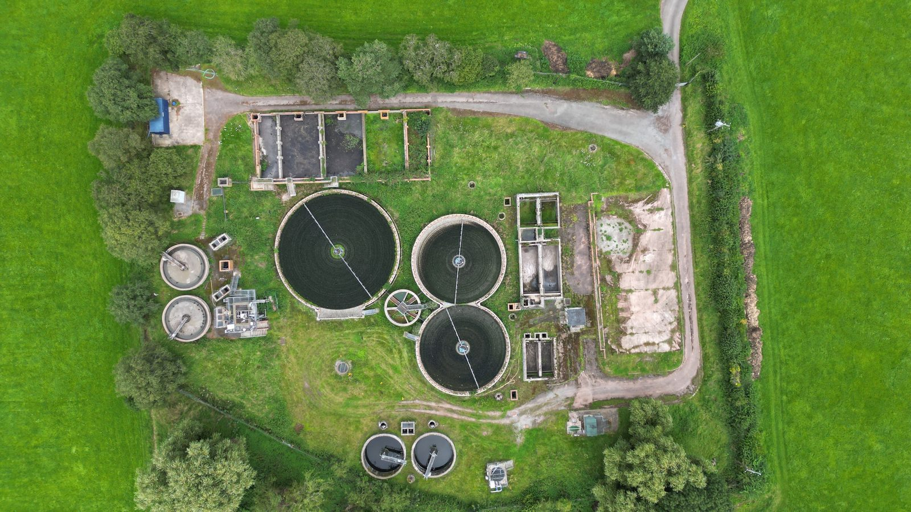
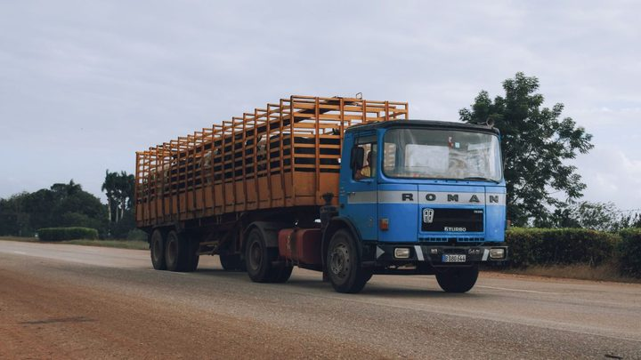

A Justiça dá 90 dias para Bombinhas abrir CRAS e CREAS oito horas por dia
A cidade gastou R$ 141 por morador em assistência social em 2025.
A Prefeitura recebeu em 16 de setembro o Estudo de Concepção do Sistema de Esgotamento Sanitário, feito pelo Consórcio Litoral, Techne Geasa, com projeção de população até 2058. É a peça que abre caminho para o primeiro sistema público de esgoto da cidade. Fomos ver o retrato de hoje no Censo do IBGE: dos 9.875 domicílios de Porto Belo, 7.283 jogam o banheiro em fossa séptica sem ligação com rede nenhuma, e só 1.444 aparecem ligados a rede geral ou pluvial. Montamos a comparação com as cidades vizinhas, e Porto Belo fica no pé da tabela ao lado de Bombinhas.
Em 30 segundos · Modo de Leitura, formato original Santa Informa
Porto Belo deu um passo no esgoto.
Recebeu um Estudo de Concepção.
Foi em 16 de setembro.
Quem fez foi o Consórcio Litoral, Techne Geasa.
O estudo projeta a cidade até 2058.
Ele mapeou bacias, rios e vazões.
Apontou onde caberiam as ETEs.
Também rede coletora e elevatória.
E comparou o custo das alternativas.
Atenção: estudo não é obra.
É a peça que vem antes do projeto.
Depois vêm o ambiental e o executivo.
Seria o primeiro sistema público da cidade.
Fomos ao Censo de 2022 ver o hoje.
Porto Belo tem 9.875 domicílios.
7.283 usam fossa séptica sem rede.
São 73,8%, quase 3 em cada 4.
Outros 779 usam fossa rudimentar.
E 82 despejam em rio, córrego ou mar.
Ligados a rede geral ou pluvial: 1.444.
Ou seja, 14,6% dos domicílios.
Em Bombinhas é parecido: 12,8%.
Em Itapema sobe para 63,1%.
Em Balneário Camboriú, 95,5%.
Uma ressalva do próprio IBGE.
Ele junta rede de esgoto e rede de chuva.
Então o número não separa as duas.
InfraestruturaPublicada em Redação Santa Informa

A Prefeitura de Porto Belo recebeu em 16 de setembro o Estudo de Concepção do Sistema de Esgotamento Sanitário, elaborado pelo Consórcio Litoral, Techne Geasa. O documento olha a cidade até 2058: projeta onde a população vai se concentrar, mapeia bacias, rios e vazões, aponta lugares possíveis para as estações de tratamento, para a rede coletora e para as elevatórias, e compara quanto custa cada alternativa, contando implantação e operação. Pelo texto da própria Prefeitura, é a base para os estudos ambientais e para os projetos básico e executivo do primeiro sistema público de esgotamento sanitário da cidade. Estudo não é obra, e é bom deixar isso claro: o que foi entregue é o desenho que vem antes do projeto. O tamanho do que falta está no Censo de 2022: dos 9.875 domicílios de Porto Belo, 7.283 escoam o banheiro para fossa séptica sem ligação com rede nenhuma, o que dá 73,8%, quase três em cada quatro casas.
Para medir o tamanho do que falta, fomos ao Censo de 2022 do IBGE, que pergunta domicílio por domicílio para onde vai o esgoto do banheiro. Porto Belo tinha 9.875 domicílios ocupados. Desses, 7.283 usavam fossa séptica ou fossa filtro sem ligação com rede, o que dá 73,8%, quase três em cada quatro casas. Outros 779 usavam fossa rudimentar ou buraco, 76 lançavam em vala e 82 jogavam direto em rio, lago, córrego ou mar. Ligados a rede geral ou pluvial apareciam 1.444 domicílios, 14,6% do total, mais 190 com fossa séptica ligada à rede.
O IBGE junta numa categoria só a rede geral de esgoto e a rede pluvial, que é a galeria feita para água de chuva. Como o próprio Censo não separa as duas, aqueles 14,6% de Porto Belo não podem ser lidos como "14,6% com esgoto tratado". Parte desse escoamento pode estar indo para galeria de chuva, que não trata nada. Por isso a matéria trata o número como o que ele é: a fatia de domicílios ligada a alguma rede, seja ela qual for.
Montamos a mesma conta para os municípios do entorno, com a mesma tabela do Censo. Bombinhas tem 12,8% dos domicílios em rede geral ou pluvial, o menor da comparação. Porto Belo vem logo acima, com 14,6%. Tijucas marca 40,1% e Camboriú, 43,4%. Itapema chega a 63,1%, com 17.317 dos seus 27.423 domicílios. E Balneário Camboriú aparece em outro patamar, com 95,5%, ou 55.247 domicílios de 57.862. A Costa Esmeralda, que vende praia limpa como produto, tem duas das três cidades no fim dessa lista.
O resumo de 30 segundos está no topo e a versão completa é o texto acima. Aqui ficam as três leituras da casa sobre o mesmo assunto.
Clara, a otimista
Toda rede de esgoto do mundo começou num papel como esse. Antes de cano, de bomba e de estação existe o estudo que diz onde cada coisa cabe e quanto custa cada caminho. Porto Belo agora tem esse papel na mão, e ele olha a cidade de 2058, não a de hoje. Planejar para trinta anos à frente é raro em prefeitura de qualquer tamanho.
Gosto também de onde a notícia foi parar. O município podia ter guardado o documento na gaveta até ter obra para anunciar, que é o que rende foto. Preferiu avisar na etapa em que ainda não há nada para inaugurar. Quem mora na cidade consegue acompanhar desde o começo, e não só quando a rua abrir.
Seu Prudêncio, o criterioso
Merece atenção a distância entre a etapa de agora e a primeira casa ligada. Depois do Estudo de Concepção vêm o licenciamento ambiental, o projeto básico, o projeto executivo, a licitação e a obra, cada um com seu prazo. Em cidade litorânea, o licenciamento costuma ser a etapa mais demorada, porque envolve área de preservação e corpo d'água. Sem cronograma publicado, o morador não tem como saber se está olhando cinco anos ou quinze.
Vale acompanhar o dinheiro. O aviso não traz o custo estimado de implantação, e esse é o número que decide tudo: sistema de esgoto raramente cabe no caixa de um município de 32 mil habitantes sem financiamento, convênio estadual ou concessão. Uma sugestão útil: publicar o estudo na íntegra no portal da transparência, junto com o quadro comparativo de custos que ele já traz. O trabalho está feito, é só abrir.
Dito isso, o mérito da etapa é claro. Concepção bem feita é o que evita estação no lugar errado e rede subdimensionada dez anos depois, que são os dois erros caros do setor. Encomendar o estudo com projeção até 2058, em vez de dimensionar para a população de hoje, é decisão técnica correta e conta a favor de quem tomou.
Caco, o sarcástico
A Costa Esmeralda vende água cristalina em toda foto de divulgação, e o Censo mostra Bombinhas com 12,8% e Porto Belo com 14,6% dos domicílios ligados a alguma rede. O mar aguenta muita coisa, e vem aguentando. O melhor de tudo é que a fossa séptica funciona mesmo, quando é bem feita e tem manutenção. Duas condições que ninguém fiscaliza casa por casa.
Também adoro a categoria do IBGE que junta rede de esgoto com rede de água de chuva. É o tipo de detalhe que faz um número parecer melhor do que é, sem ninguém ter mentido. Está tudo escrito no manual, em letra pequena, no lugar onde manual costuma guardar essas coisas.
Agora sem ironia: o estudo é uma boa notícia e Porto Belo levou o assunto para a mesa. Se você mora lá e quer acompanhar, o caminho é o portal da transparência do município e as próximas etapas de licenciamento, que é onde o assunto vai reaparecer.
Fontes: a entrega do estudo em 16 de setembro de 2026, o nome do Consórcio Litoral, Techne Geasa, a projeção até 2058, o conteúdo do documento e a informação de que ele abre caminho para o primeiro sistema público de esgotamento sanitário da cidade estão no aviso publicado pela Prefeitura de Porto Belo, que abrimos por inteiro. Os dados de domicílio por tipo de esgotamento sanitário em Porto Belo, Bombinhas, Itapema, Camboriú, Tijucas e Balneário Camboriú saíram da tabela 6805 do IBGE, Censo Demográfico de 2022, consultada por nós em 22 de setembro de 2026, e os percentuais são conta nossa sobre o total de domicílios de cada cidade. A ressalva sobre a categoria que junta rede geral e rede pluvial é do próprio IBGE, que publica as duas na mesma linha. O crescimento de população das três cidades da Costa Esmeralda está no nosso Raio-X da Região, e a ponte que liga Porto Belo a Tijucas foi assunto da nossa matéria de 16 de setembro.
A cidade gastou R$ 141 por morador em assistência social em 2025.

Litoral · InfraestruturaCaminhão acima de 12 toneladas não passa desde 11 de setembro.
Em Itapema, a mesma conta dá R$ 10,6 mil.